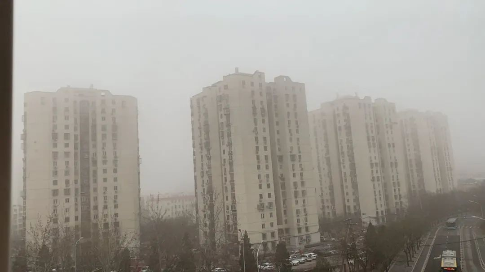

2020伊始，我在北京的“爱”与“难”
原文链接 备份链接 友情，是尘埃写作里的一个关键主题，是她乐观的来源，是她做到持续“打鸡血一样工作”的支柱。她擅长写漂泊的生活，因为那是她最常见的生活形态。在这样的”移步换景“的写作诉求里，她遇到的最大的问题是：小处和大处怎么衔接和表 …

作者施洪丽一出手，带来四位家政工的故事。
请注意到她一开始对那间美好世界的单身公寓出租屋的描写：是那么详细，那么数据化——一个她们称为家的地方。
简单的行李和床后面牵扯着的是一张稀里哗啦的中国地图：延庆的雪，高粱地里的两天两夜，风景优美、经济落后的山水里需要被锄掉的杂草。
随着空间展开的，还有时间。可是随着时间的推移，令这些年过半百、什么苦都吃过的女性恐惧的东西，竟然一点也没有少。她们想躲开的，是疫情，更是中介。
——写作指导/特约编辑：静远
北京东五环外有座城中村——皮村，首都机场就在村子附近。从公交站下车，步行十分钟左右，有一栋名为美好世界的单身公寓楼。楼里都是出租屋，其中201室里住着四位租客。这间公寓约20平，带厨卫，有两张一米五的床，一个小衣柜，一张写字桌。每月租金是1200元，卫生费20元，电按照一元一度算，一年1200的暖气费，WiFi每月50元。所有费用四人平摊。
这四位都是家政工，分别为月嫂赵红梅、李爱菊、钱桂兰，和育儿嫂周春月。往年的正月初八之后，她们大多都在雇主家做家政挣钱。而今年，眼看元宵节已过了八天，她们其中三个都还呆着屋子里：都在隔离中，且已失业。而不在屋里的那位，名叫钱桂兰，因为老家封村封路，现在还出不来。

几位家政阿姨原本相互不熟悉。家政公司都有微信群，每位阿姨有多个家政群，公司抽中介费实在太高（一般的，抽工资的30%，高的抽50%，每个月都要抽），所以逼得大家要私下在不同的中介公司微信群里揽活，梦想找到中介费最低的公司。活跃在这些群里，一来二往，就互相认识了。
通过微信，想法一致的阿姨们一合计：合租房吧。
很多家政工是住在家政公司的，这样其实有很多弊端。因为家政公司为阿姨提供住宿，对应的，阿姨们就必须在该公司揽活；在公司住宿，大家天天见面，有些家政公司以培训为幌子，反复收培训费，如果阿姨拒绝，即遭公司排斥；家政中介公司提供的住宿条件差，还需缴纳费用。
而自己租房，一是自由，可以到不同的公司找活，有时可以逃避公司抽中介费，偶尔接点私活多挣钱，二是晚上还能睡舒服些。
由于公司抽中介费，而且雇佣双方都抽，所以有些雇主也想摆脱这样的情况，也不愿意花这个钱。他们往往也与阿姨私下联系，节省中介费。家政工流动性大，家政公司不愿担责，不给阿姨保障，所以不与阿姨签合同。因此阿姨们这样做，家政公司是不管的，当然也无权管。
月嫂赵红梅是去年六月份才搬进来的，是位川嫂子，说话干脆直爽。以前住公司宿舍，有点打呼噜。宿管老师（编者注：中介公司提供的住处的管理人员）不喜，常斥责，说影响别人休息。

赵红梅刚接过一单。其实过节期间本不打算接单，想带女儿到延庆赏雪。女儿稀罕雪，说，没好好看过。计划没有变化快，临近春节时公司告知有客户，赵红梅想了想，还是上吧。
家里老公有慢阻肺，丧失劳动能力，每天还要吸氧，吸药。家里早年间修了两层小楼，不符合国家扶贫优惠对象，除了新农合报销部分医药费，其他全是自费，这些年就是靠着红梅做月嫂挣点血汗钱，维持老公的药费和家里的基本开销。所以一看有挣钱的机会，哪容错过，其它事情来日方长。
准确地说，赵红梅知道新冠肺炎还是武汉封城那天，宝妈告诉她的。她没上户之前，偶然从百度浏览上看了一次，说是谣言，每天为生计奔波，也没有把心思放在这上面。月嫂是高薪，要求严厉，上户不许看手机，据说手机辐射对新生儿健康不利，除非有重要的事，平常都是调成静音，晚上22点之后，才能看20分钟的微信或百度信息。当然每天超负荷劳作，人只想睡觉，哪有时间亲近手机。
疫情严重与否，赵红梅很大一部分是从宝爸口中得知，宝爸每天都会从超市、小区带回来一些故事。蓝衣服大爷与白帽子大妈争抢西红柿，操东北口音的大姐吐槽大白菜价格超过鸡蛋，宝妈要吃的肝肾买不到，快递不许进小区，小区开始测体温，小区开始登记，小区只许两天出去一次买菜，小区开始封闭式管理……
另一部分信息，来自手机上的疫情新闻，和街对面的汉庭酒店。赵红梅每天上下午要开窗通风两次。武汉封城之前，酒店门口车水马龙。封城之后，门可罗雀。种种迹象显示，疫情严重了。
家政姐妹每天在群里传递疫情信息，测体温，打卡，发定位。赵红梅也照做，作为健康和未离京的证据。
26天的合同期很快就到了，赵红梅要下户了。宝爸带回来的故事：管控越来越严格了，小区不允许租户进来了。她开始担心住宿问题，联系房东询问是否可以回到出租屋，房东回答模棱两可。一说，要社保卡，可是这对她来讲是天方夜谭，有哪个中介公司会帮月嫂买社保？二说，可以碰运气，让公司盖章证明未离京。不知是这家中介公司没有公司章，还是没有营业执照，赵红梅反正没盖着公司章，她处境尴尬起来。

没有公司章，她的证明就是废纸一张。打卡，朋友圈定位，村口工作人员概不承认，由于未离京，不能提供返京的健康证明，开不了隔离证。她在客户家，房东登记未离京人员，又没有她的名字，而且无法提供社保卡。
赵红梅哑巴吃黄连，好话说了一箩筐，夜幕降临，村口工作人员同意，只能进不能出。一旦外出，就进不来，罢了，安心休息，为国家做贡献吧，疫情结束再挣钱不迟。现在的她下户已有一个礼拜了，在等隔离解除那天，出去找工作。
钱桂兰和赵红梅是老乡，她们的户籍所在地，风景优美，经济落后。钱桂兰身材矮小，说话声与蚊子类似，细声细气，干农活就是一副吃亏相。她的生活真的不忍卒读。
83年全大队56名孩子考初中，只有5名孩子考上，又有5名孩子选择复读，其余46名孩子就地小学毕业，包括钱桂兰。那时包产到户刚开始，缺人手干农活，钱桂兰成天务农，19岁被人贩子拐卖到山西，用她的话说，她也想嫁到山西过好日子，除了人贩子欺骗，她本人也憧憬富裕的外面世界，讨厌穷山恶水五分田的川南山地。
外面的世界很无奈，山西除了住窑洞，冬天不洗脚之外，穷与四川不分伯仲。山西男人怕她跑了人财两空，严加看管外加家常便饭地虐待。第二年她生了一个小男孩。第三年，高粱涨势正旺的季节，一天晚上，她瞅准一个机会逃了出来。
婆婆背着孩子在前面追，山西男人打着火把带着全村的男亲属紧跟其后。钱桂兰在高粱地里躲了两天一夜才敢出来。她一路乞讨，打零工，做一些无法用语言描述的工作，逃回家乡。再婚后生下一子一女，老公在成都某小区当保安，薪资有限。
钱桂兰拼命工作，省吃俭用，2015年给山西大儿子5万元，作为其结婚贺礼，也暗含愧疚。母子坚冰打破。

村里封村封路之后，钱桂兰带领全家——读大学的儿子，上高中女儿，当保安的老公——都去地里，锄那些比人还高的杂草，锯那些比碗口还粗的杂树。把田地弄平整，送给村里那些闲不住的老人做，让他们种点庄稼，果蔬。她可以领点粮食补贴款，至少不会被罚款。因为队长说，撂荒要罚款了。
更多的时候她望眼欲穿，等拐点出现，等疫情解除。在外面，哪怕抛夫弃子，低声下气，看人脸色挣工资，也强过在村子里饿肚子。全家三亩六分耕地，解决不了温饱的。
李爱菊去年预定好了客户，2月8号预产期。月嫂都会前后预留半个月的时间等待宝妈生产，只有3%的产妇会在预产期当日生宝宝。春节期间李爱菊没回老家，在出租屋等。人算不如天算，客户倒是顺利生产了，2月14号李爱菊高高兴兴地提着行李箱去上户。谁知道，小区实行封闭式管理，除了小区住户，天王老子都不让进。李爱菊傻眼了，垂头丧气回到出租屋。
李爱菊已知天命，不，还多两岁，黑白头发各占一半。她这一单是磨破嘴皮，踏破铁鞋才争取来的。月嫂年龄超过五十，月嫂公司就不待见了。她跑了很多次见面会，往往连面试的机会都没有，网络上有很多月嫂阿姨的负面新闻，导致见面会上有60多位月嫂阿姨，才5、6位客户，竞争惨烈。客户要求也匪夷所思，除了技能、年龄、经验、地域、眼缘之外，有的要求不打呼噜，普通话标准，奇葩的有要求阿姨24小时服务不睡觉的，有要求产妇宝宝不能生病的，等等。
李爱菊这单，是由签单老师——也就是家政公司的销售员，与黄金期年龄（即年龄在45周岁左右）的月嫂合作，先把合同签下来，除了家政公司抽取高额佣金，李爱菊还得给签单老师一定数量的回扣，签单老师就会告诉客户，签合同的月嫂有不可抗拒的理由上不了户，然后拼命地、从经验丰富层面上推荐她，才谈成了。这下黄了，疫情期间，客户更少了。
育儿嫂周春月，身材单薄，沉默寡言。90年高中毕业的她，是四位家政工中学历最高的，在云南老家的学校代过两年课。村支书的儿子初二辍学后，顶替了周春月的岗。在出租屋里，她时不时冒一句：当年，我跟高加林一样。被村支书儿子挤走，要不然，我还在教书。
周春月到北京，先是做保姆，月嫂职业兴起之后，转行做月嫂。月嫂这职业，主要是熬夜。遇到威廉·西尔斯定义的高需求宝宝，一天只能睡三，四个小时。周春月患有轻微贫血，熬夜之后，白天走路，远远望去像是醉酒。有一次，实在太困，抱着小宝贝，撞了一下，撞到婴儿床的护栏。婴儿床护栏有一层海绵防撞装置，小宝贝无大碍，宝奶奶可不依，拉她去撞门，让她尝尝被撞的滋味。客户还投诉她，辛辛苦苦18天，7600元血汗钱就这样泡汤了。
实际上，家政公司只赔了1000元，剩下的6600被家政公司骗吞了。月嫂的工资都由家政公司代收，给客户造成员工制、客户利益有保障的假象。家政工投诉无门，只能自我安慰，运气欠佳，舍钱免灾。
现在她换做育儿嫂了，一般三个月之后接手。钱比月嫂挣得少，但是晚上能休息。

年前，周春月从上一个客户家辞职。这家她做了两个月：雇主让她每天吃残羹剩饭，她好面子，不吭声。后来，剩饭都吃不饱，她辞职了。辞职之前一个礼拜，周春月开始联系家政公司，希望公司帮她留意合适的育儿客户。
周春月文化高，有经验，相对来说易上户。春节，也是家政用工荒。家政公司为她物色好了客户，年后就上户。春节她回老家，铺天盖地的疫情笼罩神州。正月初二，她就动身返京了。她想尽早离家，除了家政公司不想煮熟的鸭子飞走，急着催她上户以外，畏惧家暴的老公也是另外一个原因。
回到北京，当时还没有隔离政策，她就直接上户了。在客户家呆了四天，管控才严格起来。客户是小学教师，上班时间推迟。之后客户开始挑刺，找托辞，其实心疼钱。最终，她被迫下户。而她干了四天的那点工资还不够抵扣中介费。
这屋子里的家政工姐妹，心态好，凡事想得开。她们想起那些困在老家出不来的姐妹，觉得现在还是强多了。有些姐妹刚来北京，家政公司不让住，下午就打道回府，回老家还要隔离。还有姐妹来北京花2000块，在宾馆隔离，隔离完了之后，好多单位没有复工，客户家里不缺人手，也找不到工作，没有地方可去，进退维艰。
留在“美好世界”的三位家政工姐妹，平时太忙，现在闲下来，除了关注疫情和追剧，学习成了她们的首要任务。母婴护理知识，幼儿早教，烹调技能，都该系统地学，提升自我很有必要。
从保姆到月嫂，已到知天命的年纪，大家知道最终都会被淘汰。现在，雇主家里基本都装监控，有些变态的，连卫生间都装。缺德的家政公司和客户不是个例。除了家政公司欠薪、跑路之外，还有一些家政公司，在阿姨即将下户之时，与雇主勾结，让雇主鸡蛋里挑刺。他们最终就以这种方式合伙侵吞家政工的血汗钱。
所以，每次能有一份合适的家政工作，大家就已经觉得很幸运了。对于大多数家政工姐妹来说，家政服务收入是他们唯一的经济来源。
那些即将工作的家政工姐妹们，你们一定要珍惜工作机会，一旦进入客户家立刻更换新口罩，拿出自备的消毒液，擦手，擦拭行李箱，洗澡，更换全部衣物。毕竟福特说，再也没有比工资更重要的事了。

点击图片获取征文详情


请尊重原创，保护版权
本文入选北京鸿雁社工服务中心和尖椒部落联合发起的“封闭与流动：疫情下的家政工”征文活动，文章由鸿雁写作班供稿，指导老师为静远，她于2019年发起”落地生根”家政工写作项目。
本活动系列文章不接受任何形式的改编转载，转载请联系尖椒部落，并在转载时务必注明以上介绍信息及作者信息。

原文链接 备份链接 友情，是尘埃写作里的一个关键主题，是她乐观的来源，是她做到持续“打鸡血一样工作”的支柱。她擅长写漂泊的生活，因为那是她最常见的生活形态。在这样的”移步换景“的写作诉求里，她遇到的最大的问题是：小处和大处怎么衔接和表 …
原文链接 备份链接 还有些雇主，因为年前预定好的阿姨无法回京，自己的公司又复工，不能没有育儿嫂，干脆开着车去阿姨的老家们，将阿姨们从河北、山东、山西这些地方，接回到北京来，放到自家另一所房子里隔离14天后上工。 文 | 涂雨清 编辑 | …
原文链接 备份链接 疫情之下，许多不曾见过的场景变得稀松平常，而曾经再简单不过的事却变得十分艰难。 突如其来的疫情，让家政工的工作节奏在“上户”和“下户”间不断切换。偌大的北京城里，她们留守在各自的出租屋内，期待疫情过后的阳光。 如果晚走 …
原文链接 备份链接 燃财经（ID:rancaijing）原创 作者 | 金玙璠 编辑 | 魏佳 眼下原本是手机行业传统的销售旺季，全国的渠道商、零售商年前备足了货，摩拳擦掌，就等着开工冲一把业绩，但一场疫情打懵了所有人。 来自天风证券的报 …
原文链接 备份链接 上海市家协从防疫之初，就明确了“防疫情”和“保刚需”这两个目标。此次疫情也充分反映出家政行业的特殊性，无论是马上要实施的《上海市家政服务条例》，还是去年国务院提出的“促进家政服务业提质扩容36条”都是希望家政行业能够尽 …